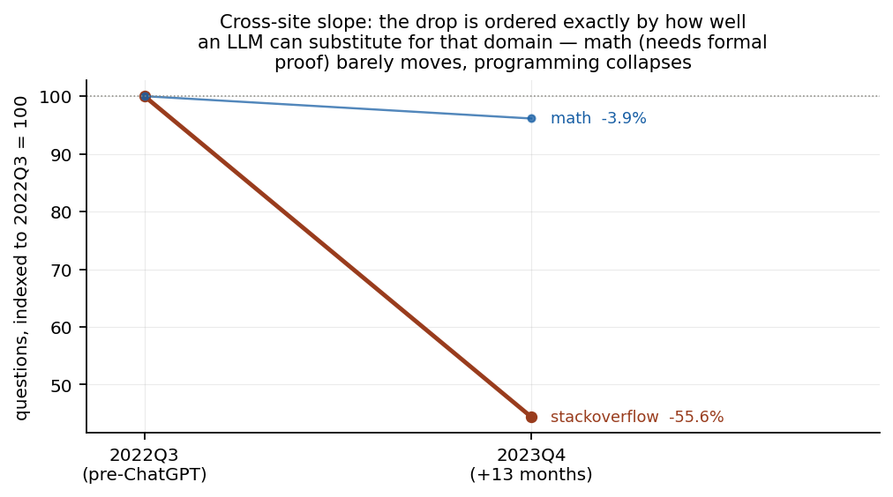
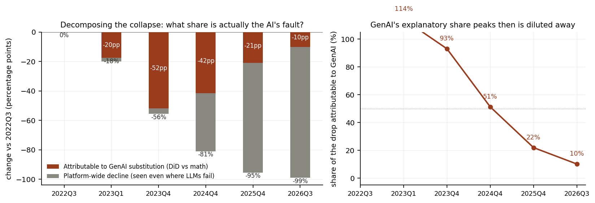
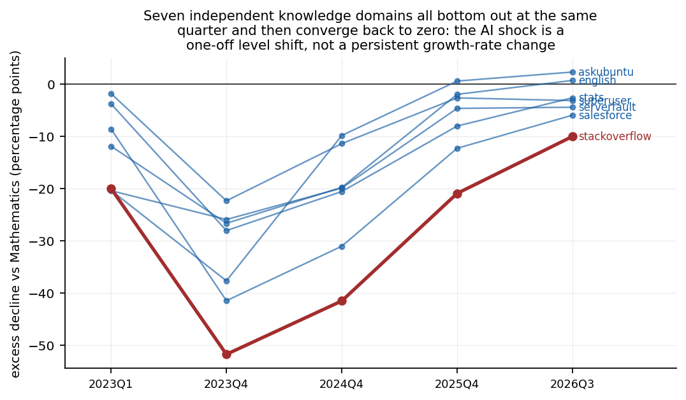
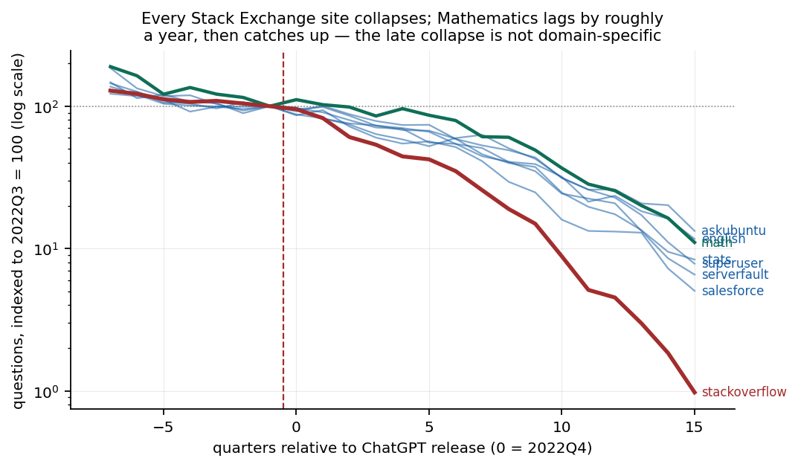
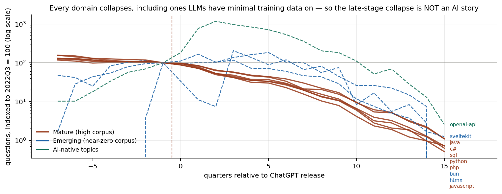
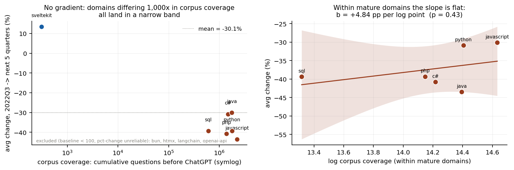
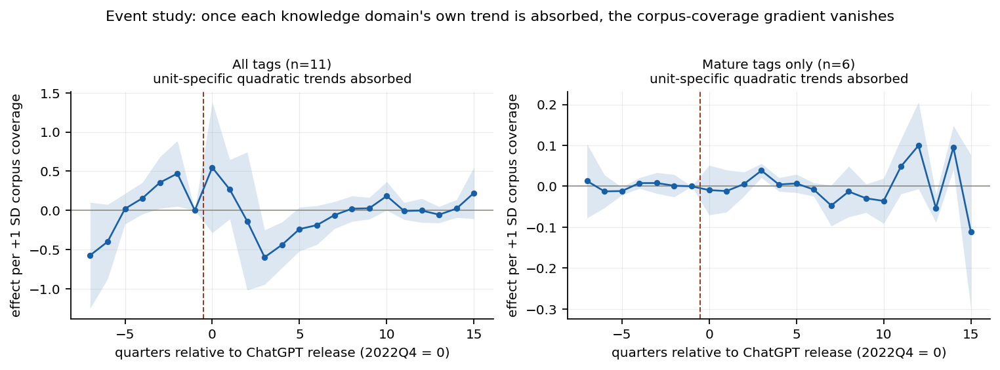
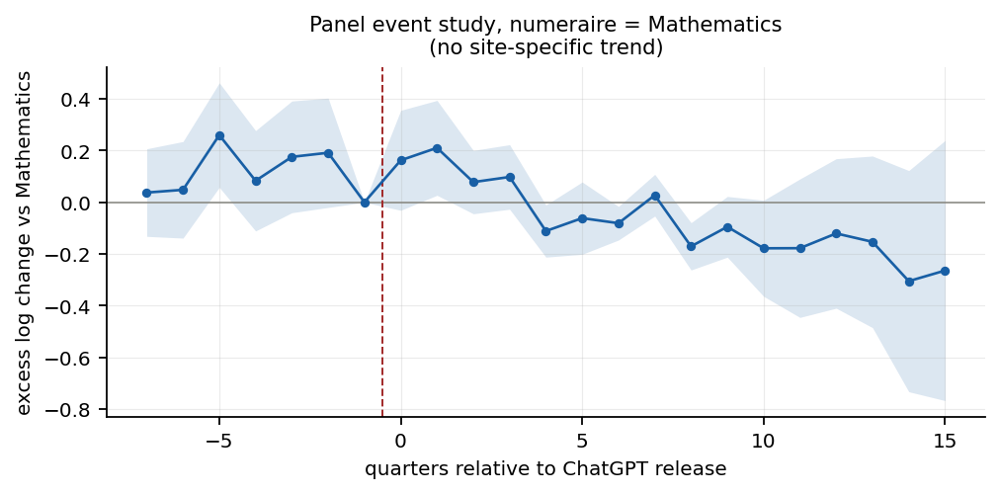

生成式 AI 与知识公共品的供给塌陷
ChatGPT 发布（2022-11-30）对 Stack Exchange 网络的冲击 · 准自然实验 ·
数据覆盖 2021Q1–2026Q3 · 全流程可复现 ·
完整报告 · 交互版看板
AI 可归因的峰值冲击（DiD vs 数学站点）
−51.7 pp
2022Q3 → 2023Q4，占同期总降幅的 93%
2026 年 LLM 直接替代的归因份额（百分点口径）
10.2%
对数口径下相对差距同期从 53.8% 扩大到 91.2%
剂量-反应斜率（成熟领域组内）
+0.4 pp / log
p = 0.955，统计上为平 → 门槛效应
伪处理时间安慰剂
全部通过
p = 0.84 – 0.99（修复预趋势后）
一 · 跨站点斜率：降幅按「LLM 可替代性」排序
ChatGPT 发布后 13 个月。需要严格形式证明的数学站点几乎无恙；答案最模板化的编程站点跌幅最大。

横轴左端为 2022Q3（冲击前，统一指数化为 100），右端为 2023Q4（冲击后 13 个月）。
二 · 归因分解：AI 的份额在一年内从 93% 稀释到 10%
Stack Overflow 累计降幅 = LLM 直接替代（与数学站点的差额） + 平台级衰亡（对照站点同样经历的）。2023Q1 的 114% 是因为对照站点同期反升 2.5%，含义是「若无 LLM 直接替代，SO 本应上升」。

左：深色为可归因于 LLM 直接替代的部分，灰色为平台级衰亡。右：归因份额随时间的变化。
「AI 吸干 Stack Overflow（−99%）」是错误归因：后期降幅的主体是连数学站点也同步发生的跨领域衰亡。但两种口径必须并列 ——百分点口径显示份额 93%→10%，对数口径下 SO 相对对照领域的差距却从 53.8% 扩大到 91.2%。百分点口径的收敛是 SO 已跌至地板的算术结果，不应解读为 AI 影响消退 。
三 · 横截面一致性：7 个独立知识领域同时触底、同步收敛
以数学站点为基准，各知识领域相对数学的超额下降。这是比任何单一回归系数更硬的证据。

七条独立曲线在 2023Q4 同时触底，随后全部收敛。
四 · 八个站点的原始轨迹
崩塌是全网性的，数学站点只是滞后约一年，随后同样崩塌。

纵轴为对数刻度，指数化至 2022Q3 = 100。
五 · Stack Overflow 站内知识领域轨迹
成熟领域（实线）在冲击后集体跳水；新技术栈（虚线）先因采用曲线上升、后期同样塌陷——证明后期是平台级现象。

纵轴为对数刻度，指数化至 2022Q3 = 100。
六 · 门槛效应：语料覆盖度不产生梯度
先验假设「语料覆盖越充分、被替代越狠」被数据否定。语料覆盖度相差 1,000 倍的成熟领域，跌幅全部落在窄带内。

左：各领域降幅对历史语料量（对数刻度）作图，无梯度。右：成熟领域组内回归斜率接近零且不显著。
替代由「LLM 能力是否跨过该领域的门槛」决定，而非语料密度。一旦跨过门槛（可低至数百条公开问答），追加的语料存量不再带来额外替代——这对「模型自噬」的担忧是重要修正。
七 · 事件研究
左：Stack Overflow 站内 tag 面板；右：以数学站点为基准的跨站点面板。

加入领域特定二次趋势后，处理强度梯度消失。

跨站点面板事件研究（以 Mathematics 为 numeraire）。
八 · 计量规格汇总
β 解释：语料覆盖度每 +1 标准差，处理后的提问量变化。加入领域特定二次趋势后梯度消失——先验假设被数据否定。
样本 规格 β p 值 判定
全部 11 tag TWFE，无趋势 −1.957 <0.001 虚假梯度（被采用曲线污染） 全部 11 tag + tag 线性趋势 −1.115 0.001 仍显著 全部 11 tag + tag 二次趋势 −0.443 0.220 梯度消失 全部 11 tag PPML + 二次趋势 −0.189 0.310 梯度消失 MATURE 6 tag 全部规格 ≈ 0 0.28–0.92 组内无梯度 全部 11 tag 伪处理安慰剂（前移 2 期） +0.010 0.980 通过
数据源：Stack Exchange REST API v2.3（实时采集、全量缓存） ·
方法：TWFE / PPML / wild cluster bootstrap / DiD ·
复现：make all ·
交互版看板（需加载 Chart.js）